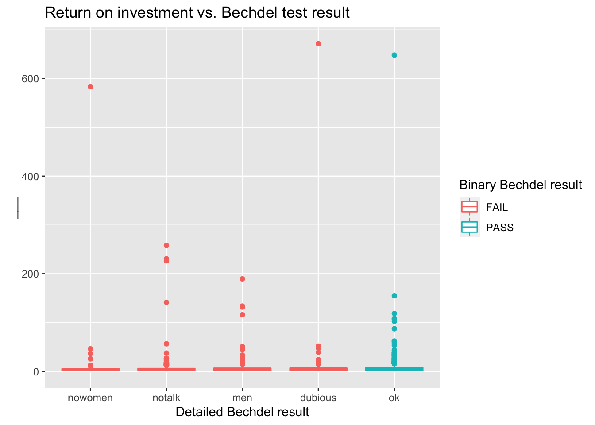
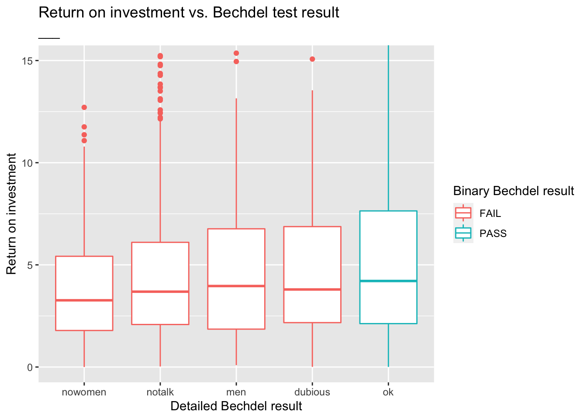

library(fivethirtyeight)
library(tidyverse)Bechdel
In this mini analysis we work with the data used in the FiveThirtyEight story titled “The Dollar-And-Cents Case Against Hollywood’s Exclusion of Women”. Your task is to fill in the blanks denoted by ___.
Data and packages
We start with loading the packages we’ll use.
The dataset contains information on 1794 movies released between 1970 and 2013. However we’ll focus our analysis on movies released between 1990 and 2013.
bechdel90_13 <- bechdel %>%
filter(between(year, 1990, 2013))There are ___ such movies.
The financial variables we’ll focus on are the following:
budget_2013: Budget in 2013 inflation adjusted dollarsdomgross_2013: Domestic gross (US) in 2013 inflation adjusted dollarsintgross_2013: Total International (i.e., worldwide) gross in 2013 inflation adjusted dollars
And we’ll also use the binary and clean_test variables for grouping.
Analysis
Let’s take a look at how median budget and gross vary by whether the movie passed the Bechdel test, which is stored in the binary variable.
bechdel90_13 %>%
group_by(binary) %>%
summarise(
med_budget = median(budget_2013),
med_domgross = median(domgross_2013, na.rm = TRUE),
med_intgross = median(intgross_2013, na.rm = TRUE)
)# A tibble: 2 × 4
binary med_budget med_domgross med_intgross
<chr> <dbl> <dbl> <dbl>
1 FAIL 48385984. 57318606. 104475669
2 PASS 31070724 45330446. 80124349Next, let’s take a look at how median budget and gross vary by a more detailed indicator of the Bechdel test result. This information is stored in the clean_test variable, which takes on the following values:
ok= passes testdubiousmen= women only talk about mennotalk= women don’t talk to each othernowomen= fewer than two women
bechdel90_13 %>%
#group_by(___) %>%
summarise(
med_budget = median(budget_2013),
med_domgross = median(domgross_2013, na.rm = TRUE),
med_intgross = median(intgross_2013, na.rm = TRUE)
)# A tibble: 1 × 3
med_budget med_domgross med_intgross
<int> <dbl> <dbl>
1 37878971 52270207 93523336In order to evaluate how return on investment varies among movies that pass and fail the Bechdel test, we’ll first create a new variable called roi as the ratio of the gross to budget.
bechdel90_13 <- bechdel90_13 %>%
mutate(roi = (intgross_2013 + domgross_2013) / budget_2013)Let’s see which movies have the highest return on investment.
bechdel90_13 %>%
arrange(desc(roi)) %>%
select(title, roi, year)# A tibble: 1,615 × 3
title roi year
<chr> <dbl> <int>
1 Paranormal Activity 671. 2007
2 The Blair Witch Project 648. 1999
3 El Mariachi 583. 1992
4 Clerks. 258. 1994
5 In the Company of Men 231. 1997
6 Napoleon Dynamite 227. 2004
7 Once 190. 2006
8 The Devil Inside 155. 2012
9 Primer 142. 2004
10 Fireproof 134. 2008
# … with 1,605 more rowsBelow is a visualization of the return on investment by test result, however it’s difficult to see the distributions due to a few extreme observations.
ggplot(data = bechdel90_13,
mapping = aes(x = clean_test, y = roi, color = binary)) +
geom_boxplot() +
labs(
title = "Return on investment vs. Bechdel test result",
x = "Detailed Bechdel result",
y = "___",
color = "Binary Bechdel result"
)
What are those movies with very high returns on investment?
bechdel90_13 %>%
filter(roi > 400) %>%
select(title, budget_2013, domgross_2013, year)# A tibble: 3 × 4
title budget_2013 domgross_2013 year
<chr> <int> <dbl> <int>
1 Paranormal Activity 505595 121251476 2007
2 The Blair Witch Project 839077 196538593 1999
3 El Mariachi 11622 3388636 1992Zooming in on the movies with roi < ___ provides a better view of how the medians across the categories compare:
ggplot(data = bechdel90_13, mapping = aes(x = clean_test, y = roi, color = binary)) +
geom_boxplot() +
labs(
title = "Return on investment vs. Bechdel test result",
subtitle = "___", # Something about zooming in to a certain level
x = "Detailed Bechdel result",
y = "Return on investment",
color = "Binary Bechdel result"
) +
coord_cartesian(ylim = c(0, 15))